如无特殊说明，本文内容针对的 Redis 版本为
3.0.0，源码下载地址为 redis-3.0.0。
1 前言 #
-
Redis 的
key是顶层模型，他的value是扁平化的，所有的value都是一个object，它的结构如下：typedef struct redisObject { unsigned [type] 4; unsigned [encoding] 4; unsigned [lru] REDIS_LRU_BITS; int refcount; void *ptr; } robj; -
上面的几个字段的意义如下：
type：数据类型，就是我们熟悉的string、hash、list等。encoding：内部编码，其实就是数据结构，指的是当前这个value底层是用的什么数据结构，因为同一个数据类型底层也有多种数据结构的实现，所以这里需要指定数据结构。REDIS_LRU_BITS：当前对象可以保留的时长。refcount：对象引用计数，用于 GC。ptr：指针，指向以encoding的方式实现这个对象的实际地址。
-
整个 Redis 的数据结构组织如下图所示：

2 数据类型 #
Redis 中主要有 5 种数据类型，分别是字符串（String）、列表（List）、集合（Set）、有序集合（ZSet）、哈希（Hash）。
2.1 字符串 #
2.1.1 存储数据 #
- 可以用于存储字符串、整数、浮点数、JSON、XML、二进制等，最大不能超过 512M，是可变的动态字符串。
2.1.2 使用场景 #
- 计数器：可以利用 Redis 的
incr、decr等命令实现计数。 - 共享 Session：Redis 的
key可以方便地设置过期时间，用于实现session key的自动过期，验证时先根据uid路由到对应的 Redis，如取不到session key，说明session key已过期，需要重新登录，如取到session key，则校验通过，升级此session key的过期时间即可。 - 限流限速。
- 实现分布式锁。
2.1.3 数据结构 #
- 在 Redis 内部，
String类型有两种底层存储结构，Redis 会根据存储的数据和用户的操作指令自动选择合适的结构：int：存放整数类型。SDS：Simple Dynamic String，简单动态字符串，存放浮点、字符串、字节类型。
2.1.4 SDS #
2.1.4.1 前言 #
-
Redis没有直接使用 C 语言传统的字符串表示（以空字符结尾的字符数组，以下简称 C 字符串），而是自己构建了一种名为简单动态字符串（Simple Dynamic String, SDS）的抽象类型，并将 SDS 作为 Redis 的默认字符串表示。
-
在 Redis 里，C 字符串只会作为字符串字面量用在一些无需对字符串进行修改的地方，比如打印日志：
redisLog(REDIS_WARNING, "Redis is now ready to exit, bye bye..."); -
当 Redis 需要的不仅仅是一个字符串字面量，而是一个可以被修改的字符串值时，Redis 就会使用 SDS 来表示字符串值，比如在 Redis 的数据库里面，包含字符串值的键值对在底层都是由 SDS 实现的，例如：
redis> SET msg "hello world" OK那么 Redis 将在数据库中创建一个新的键值对，其中：
- 键值对的键是一个字符串对象，对象的底层实现是一个保存着字符串
msg的 SDS。 - 键值对的值也是一个字符串对象，对象的底层实现是一个保存着字符串
hello world的 SDS。
- 键值对的键是一个字符串对象，对象的底层实现是一个保存着字符串
-
除了用来保存数据库中的字符串值之外，SDS 还被用作缓冲区，其中AOF 模块中的 AOF 缓冲区，以及客户端状态中的输入缓冲区，都是 SDS 实现的。
2.1.4.2 定义 #
-
SDS 的定义在源码中的
src/sds.h/sdshdr中，其结构为：struct sdshdr { unsigned int len; /*记录 buf 数组中已使用字节的数量，等于 SDS 所保存字符串的长度*/ unsigned int free; /*记录 buf 数组中未使用字节的数量*/ char buf[]; /*字符数组，用于保存字符串*/ }; -
结合下面的实例对上面定义中每个参数的具体含义说明如下：

len：记录buf 数组中已使用字节的数量，等于 SDS 所保存字符串的长度，实例中len的值为 5，表示这个 SDS 保存了一个 5 字节长的字符串。free：记录buf 数组中未使用字节的数量，实例中free的值为 0，表示这个 SDS 没有分配任何未使用的空间。buf：字符数组，用于保存字符串，实例中数组的前 5 个字节分别保存了R、e、d、i、s，最后一个字节保存了空字符\0。
-
SDS遵循 C 字符串以空字符结尾的惯例，保存空字符的 1 字节空间，不计算在 SDS 的
len属性里面，并且为空字符分配额外的 1 字节空间，以及添加空字符到字符串末尾等操作，都是由 SDS 函数自动完成，所以这个空字符对于 SDS 的使用者来说是完全透明的，遵循空字符结尾这一惯例的好处是SDS 可以直接重用一部分 C 字符串函数库里面的函数。
2.1.4.3 SDS 与 C 字符串的区别 #
根据传统，C 语言使用长度为 $N+1$ 的字符数组来表示长度为 $N$ 的字符串，并且字符数组的最后一个元素总是字符串 \0，这种简单的字符串表示方式，并不能满足 Redis 对字符串在安全性、效率以及功能方面的要求，下面将详细对比 C 字符串和 SDS 之间的区别，并说明 SDS 比 C 字符串更适用于 Redis 的原因。
2.1.4.3.1 常数复杂度获取字符串长度 #
- 因为C 字符串并不记录自身的长度信息，所以为了获取一个 C 字符串的长度，程序必须遍历整个字符串，对遇到的每个字符进行计数，直到遇到代表字符串结尾的空字符为止，这个操作的复杂度为 $O(N)$。
- 和 C 字符串不同，因为SDS 在
len属性中记录了 SDS 本身的长度，所以获取一个 SDS 长度的复杂度仅为 $O(1)$。 - 设置和更新 SDS 长度的工作是由 SDS 的 API 在执行时自动完成的，使用 SDS 时无须进行任何手动修改长度的工作。
- 通过使用 SDS 而不是 C 字符串，Redis 将获取字符串长度所需的复杂度从 $O(N)$ 降低到了 $O(1)$，这确保了获取字符串长度的工作不会成为 Redis 的性能瓶颈。
2.1.4.3.2 杜绝缓冲区溢出 #
-
除了获取字符串长度的复杂度高外，C 字符串不记录自身长度带来的另外一个问题是容易造成缓冲区溢出，例如
<string.h>/strcat函数可以将src字符串中的内容拼接到dest字符串的末尾：char *strcat(char *dest, const char *src); -
因为 C 字符串不记录自身的长度，所以
strcat假定用户在执行这个函数时，已经为dest分配了足够多的内存，可以容纳src字符串中的所有内容，而一旦这个假定不成立时，就会产生缓冲区溢出。 -
与 C 字符串不同，SDS 的空间分配策略完全杜绝了发生缓冲区溢出的可能性：
- 当 SDS API 需要对 SDS 进行修改时，API 会先检查 SDS 的空间是否满足修改所需的要求，如果不满足的话，API会自动将 SDS 的空间扩展至执行修改所需的大小，然后才执行实际的修改操作，所以使用 SDS 既不需要手动修改 SDS 的空间大小，也不会出现缓冲区溢出问题。
2.1.4.3.3 减少修改字符串时带来的内存重分配次数 #
- 因为 C 字符串并不记录自身的长度，因此每次增长或者缩短一个 C 字符串，程序都总要对保存这个 C 字符串的数组进行一次内存重分配操作。
- 因为内存重分配设计复杂的算法，并且可能需要执行系统调用，所以他通常是一个比较耗时的操作。
- 在一般的程序中，如果每次修改字符串长度的情况不太常出现，那么每次修改都执行一次内存重分配是可以接受的，但是 Redis 作为数据库，经常被用于速度要求严苛、数据被频繁修改的场合，如果每次修改字符串的长度都需要执行一次内存重分配的话，那么光是执行内存重分配的时间就会占去修改字符串所用时间的一大部分，如果这种修改频繁发生的话，可能还会对性能造成影响。
- 为了避免 C 字符串的这种缺陷，SDS 通过未使用空间实现了空间预分配和惰性空间释放两种优化策略：
- 空间预分配：
- 空间预分配用于优化 SDS 的字符串增长操作，当 SDS 的 API 对一个 SDS 进行修改，并且需要对 SDS 进行空间扩展的时候，程序不仅会为 SDS 分配修改所必要的空间，还会为 SDS 分配额外的未使用空间，分配的未使用空间数量由以下公式决定：
- 如果对 SDS 进行修改之后，SDS 的长度（也即是
len属性的值）小于 1MB，那么程序分配和len属性同样大小的未使用空间，这时 SDS 的len属性的值将和free属性的值相同，例如，如果进行修改之后，SDS 的len将变成 13 字节，那么程序也会分配 13 字节的未使用空间，SDS 的buf数组的实际长度将变成 13 + 13 + 1 = 27 字节（额外的 1 字节用于保存空字符）。 - 如果对 SDS 进行修改之后，SDS 的长度大于 1MB，那么程序会分配 1MB 的未使用空间，例如，如果进行修改之后，SDS 的
len将变成 30MB，那么程序会分配 1MB 的未使用空间，SDS 的buf数组的实际长度将为 30MB + 1MB + 1byte。
- 如果对 SDS 进行修改之后，SDS 的长度（也即是
- 在扩展 SDS 之前，SDS API会先检查未使用空间是否足够，如果足够的话，API 就会直接使用未使用空间，而无需执行内存重分配。
- 通过空间预分配策略，Redis 可以减少连续执行字符串增长操作所需的内存重分配次数。
- 空间预分配用于优化 SDS 的字符串增长操作，当 SDS 的 API 对一个 SDS 进行修改，并且需要对 SDS 进行空间扩展的时候，程序不仅会为 SDS 分配修改所必要的空间，还会为 SDS 分配额外的未使用空间，分配的未使用空间数量由以下公式决定：
- 惰性空间释放：
- 惰性空间释放用于优化 SDS 的字符串缩短操作，当 SDS 的 API 需要缩短 SDS 保存的字符串时，程序并不立即使用内存重分配来回收缩短后多出来的字节，而是使用
free属性将这些字节的数量记录起来，并等待将来使用。 - 通过惰性空间释放策略，SDS避免了缩短字符串时所需的内存重分配操作，并为将来可能有的增长操作提供了优化。
- 同时，SDS 也提供了相应的 API，让我们可以在有需要时，真正地释放 SDS 的未使用空间，所以不用担心惰性空间释放策略会造成内存浪费。
- 例如：
-
sdstrim函数接受一个 SDS 和一个 C 字符串作为参数，移除 SDS 中所有在 C 字符串中出现过的字符。 -
假如有一个 SDS 值
s为XYXaYYbcXYX，如下图所示：
-
当执行完
sdstrim(s, "XY")（移除 SDS 字符串中的所有X和Y）命令后，SDS 被修改为abc，如下图所示：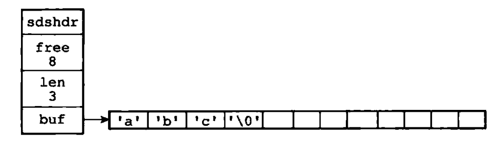
-
此时 SDS 并没有释放多出来的 8 字节空间，而是将这 8 字节空间作为未使用空间保留在了 SDS 里面，如果将来要对 SDS 进行增长操作的话，这些未使用空间就可能会派上用场。
-
例如，现在对
s执行sdscat(s, " Redis")，执行完成之后，s被修改为abc Redis，如下图所示：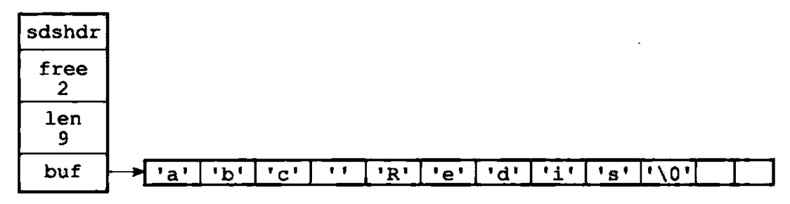
-
完成这次
sdscat操作将不需要执行内存重分配，因为 SDS 里面预留的 8 字节空间已经足以拼接 6 个字节长的Redis。
-
- 惰性空间释放用于优化 SDS 的字符串缩短操作，当 SDS 的 API 需要缩短 SDS 保存的字符串时，程序并不立即使用内存重分配来回收缩短后多出来的字节，而是使用
- 空间预分配：
2.1.4.3.4 二进制安全 #
- C 字符串中的字符必须符合某种编码（比如 ASCII），并且除了字符串末尾之外，字符串里面不能包含空字符，否则最先被程序读入的空字符将被误认为是字符串结尾，这些限制使得C 字符串只能保存文本数据，而不能保存像图片、音频、视频、压缩文件这样的二进制数据。
- 为了确保 Redis 可以适用于各种不同的使用场景，SDS 的 API 都是二进制安全的，所有 SDS API 都会以处理二进制的方式来处理 SDS 存放在
buf数组里的数据，程序不会对其中的数据做任何限制、过滤、假设，数据在写入时是什么样的，他被读取时就是什么样的，这也是我们将 SDS 的buf属性称为字节数组的原因，因为Redis 不是用这个数组来保存字符，而是用来保存一系列二进制数据。
2.1.3.4.5 兼容部分 C 字符串函数 #
- 虽然 SDS 的 API 都是二进制安全的，但他们一样遵循 C 字符串以空字符结尾的惯例，这些 API 总会将 SDS 保存的数据的末尾设置为空字符，并且总会在为
buf数组分配空间时多分配一个字节来容纳这个空字符，这是为了让那些保存文本数据的 SDS 可以重用一部分<string.h>库定义的函数。
2.2 列表 #
2.2.1 存储数据 #
- 列表可以有序地存储多个字符串，并且列表里的元素是可以重复的，可以对列表的两端进行插入或者弹出元素操作。
2.2.2 使用场景 #
- 消息队列。
2.2.3 数据结构 #
- 在 Redis 中，
List底层有两种数据结构，分别为链表（LinkedList）和压缩列表（ZipList）：- 当
List元素个数少且元素内容长度不大时，使用ZipList实现。 - 否则，使用
LinkedList实现。
- 当
2.2.4 链表 #
2.2.4.1 前言 #
- 链表提供了高效的节点重排能力，以及顺序性的节点访问方式，并且可以通过增删节点来灵活地调整链表的长度。
- 作为一种常用数据结构，链表内置在很多高级的编程语言里面，因为 Redis 使用的 C 语言并没有内置这种数据结构，所以Redis 构建了自己的链表实现。
- 链表在 Redis 中的应用非常广泛：
- 列表键的底层实现之一就是链表，当一个链表键包含了数量比较多的元素，或者列表中包含的元素都是比较长的字符串时，Redis 就会使用链表作为列表键的底层实现。
- 同时，发布与订阅、慢查询、监视器等功能也用到了链表。
- Redis 服务器本身该使用链表保存多个客户端的状态信息，以及使用链表来构建客户端输出缓冲区。
2.2.4.2 实现 #
2.2.4.2.1 链表节点 #
-
每个链表节点使用一个
src/adlist.h/listNode结构来表示，具体如下：typedef struct listNode { struct listNode *prev; /*前置节点*/ struct listNode *next; /*后置节点*/ void *value; /*节点的值*/ } listNode; -
多个
listNode可以通过prev和next指针组成双链表，如下图所示：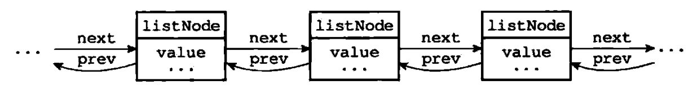
2.2.4.2.2 链表 #
-
虽然使用多个
listNode结构就可以组成链表，但使用src/adlist.h/list来持有链表的话，操作起来会更方便，具体结构如下：typedef struct list { listNode *head; /*表头结点*/ listNode *tail; /*表尾节点*/ void *(*dup)(void *ptr); /*节点值复制函数*/ void (*free)(void *ptr); /*节点值释放函数*/ int (*match)(void *ptr, void *key); /*节点值对比函数*/ unsigned long len; /*链表所包含的节点数量*/ } list; -
list结构为链表提供了表头指针head、表尾指针tail、以及链表长度计数器len，还提供了dup、free、和match成员用于实现多态链表所需的类型特定函数，具体如下：dup：节点值复制函数。free：节点值释放函数。match：节点值对比函数。
-
list可以和listNode结合组成链表，如下图所示：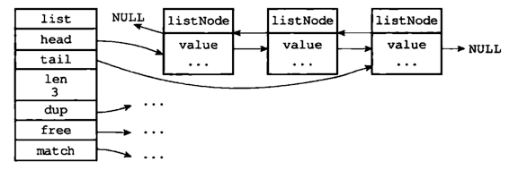
-
Redis 的链表具有如下特性：
- 双端：链表节点都带有
prev和next指针，获取某个前置节点和后置节点的复杂度都是 $O(1)$。 - 无环：表头结点的
prev指针和表尾节点的next指针都指向NULL，对链表的访问以NULL为终点。 - 带表头指针和表尾指针：通过
list的head指针和tail指针，程序获取链表的头结点和尾节点的复杂度为 $O(1)$。 - 带链表长度计算器：程序使用
list结构的len属性来对list持有的链表节点进行计数，程序获取链表中节点数量的复杂度为 $O(1)$。 - 多态：链表节点使用
void*指针来保存节点值，并且可以通过list结构的dup、free、match三个属性为节点值设置类型特定函数，所以链表可以用于保存不同类型的值。
- 双端：链表节点都带有
2.2.5 压缩列表 #
2.2.5.1 前言 #
- 压缩列表是列表键和哈希键的底层实现之一。
- 当一个列表键只包含少量列表项，并且每个列表项要么就是小整数值，要么就是长度比较短的字符串，那么 Redis 就会使用压缩列表来做列表键的底层实现。
- 当一个哈希键只包含少量键值对，并且每个键值对的键和值要么就是小整数值，要么就是长度比较短的字符串，那么 Redis 就会使用压缩列表来做哈希键的底层实现。
2.2.5.2 实现 #
-
压缩列表是 Redis为了节约内存而开发的，是由一系列特殊编码的连续内存块组成的顺序型数据结构。
-
一个压缩列表可以包含任意多个节点，每个节点可以保存一个字节数组或者一个整数值。
-
压缩列表的结构如下图所示：
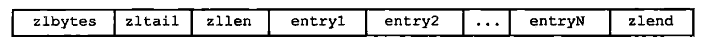
zlbytes：uint32_t类型，大小为 4 字节，主要用于记录整个压缩列表占用的内存字节数，在对压缩列表进行内存重分配或者计算zlend的位置时使用。zltail：uint32_t类型，大小为 4 字节，主要用于记录压缩列表表尾节点距离压缩列表的起始地址有多少字节，通过这个偏移量，程序无须遍历整个压缩列表就可以确定表尾节点的地址。zllen：uint16_t类型，大小为 2 字节，主要用于记录压缩列表包含的节点数量，当这个属性值小于UINT_MAX（65535）时，这个属性的值就是压缩列表包含节点的数量，当这个值等于UINT16_MAX时，节点的真实数量需要遍历整个列表才能计算得出。entryX：列表节点，长度不定，指压缩列表包含的各个节点，节点的长度由节点保存的内容决定。zlend：uint_8t，大小为 1 字节，使用特殊值0xFF（十进制 255），用于标记压缩列表的末端。
-
压缩列表的示例如下：

- 列表
zlbytes的值为0x50（十进制 80），表示压缩列表的总长为 80 字节。 - 列表
zltail的值为0x3c（十进制 60），表示如果我们有一个指向压缩列表起始地址的指针p，那么只要用指针p加上偏移量 60，就可以计算出表尾节点entry3的地址。 - 列表
zllen属性的值为0x3（十进制 3），表示压缩列表包含三个节点。
- 列表
2.3 哈希 #
2.3.1 存储数据 #
Hash存的是字符串和字符串值之间的映射。Hash将对象的各个属性存入Map里，可以只读取或更新对象的某些属性。
2.3.2 使用场景 #
- 存放结构化数据，比如用户信息，
key是用户ID，value是一个Map，这个Map的key是成员的属性名，value是属性值，这样对数据的修改和存取都可以直接通过其内部的key来实现，既不需要重复存储数据，也不会带来序列化和并发修改控制的问题。 - 建索引，比如
User对象，除了id有时还要按name来查询，可以建一个key为user:name:id的Hash，在插入User对象（set user:101{"id":101,"name":"calvin"}）时，顺便往这个Hash插入一条hset user:name:id calvin 101，这时calvin作为Hash里的一个key，值为 101，按name查询的时候，用hgetuser:name:id calvin就能从名为calvin的key里取出id。
2.3.3 数据结构 #
Hash底层有两种实现，分别是压缩列表和字典：- 当一个哈希键只包含少量键值对，并且每个键值对的键和值要么就是小整数值，要么就是长度比较短的字符串，那么 Redis 就会使用压缩列表来做哈希键的底层实现。
- 但一个哈希键包含的键值对比较多，或者键值对中的元素都是比较长的字符串时，Redis 就会使用字典作为哈希键的底层实现。
- 压缩链表的内容上面已经叙述过，具体可参考 2.2.5 压缩列表，下面将主要叙述字典相关的内容。
2.3.4 字典 #
2.3.4.1 前言 #
- 字典是一种用于保存键值对的抽象数据结构。
- 字典经常作为一种数据结构内置在很多高级编程语言里面，但 Redis 所使用的的 C 语言并没有内置这种数据结构，因此 Redis构建了自己的字典实现。
- 字典在 Redis 中的应用非常广泛：
- Redis 的数据库就是使用字典来作为底层实现的，对数据库的增、删、改、查操作都是构建在对字典的操作之上的：
-
例如，当我们执行如下命令：
redis> SET msg "hello world" OK -
此时，就会在数据库中创建一个键为
msg，值为hello world的键值对，这个键值对就是保存在代表数据库的字典里面的。
-
- 字典也是哈希键的底层实现之一，当一个哈希键包含的键值对比较多，或者键值对中的元素都是比较长的字符串时，Redis 就会使用字典作为哈希键的底层实现：
-
例如，
wensite是一个包含 10086 个键值对的哈希键，这个哈希键的键都是一些数据库的名字，而键的值就是数据库的主页网址：redis> HLEN website (integer) 10086 redis> HGETALL website 1)"Redis" 2)"Redis.io" 3)"MariaDB" 4)"MariaDB.org" 5)"MongoDB" 6)"MongoDB.org" # ... -
website的底层实现就是一个字典，字典中包含了 10086 个键值对，例如：- 键值对的键为
Redis，值为Redis.io。 - 键值对的键为
MariaDB，值为MariaDB.org。 - 键值对的键为
MongoDB，值为MongoDB.org。
- 键值对的键为
-
- Redis 的数据库就是使用字典来作为底层实现的，对数据库的增、删、改、查操作都是构建在对字典的操作之上的：
2.3.4.2 实现 #
Redis 的字典使用哈希表作为底层实现，一个哈希表里面可以有多个哈希表节点，而每个哈希表节点就保存了字典中的一个键值对。
2.3.4.2.1 哈希表 #
-
Redis 字典所使用的的哈希表由
src/dict.h/dictht定义：typedef struct dictht { dictEntry **table; /*哈希表数组*/ unsigned long size; /*哈希表大小*/ unsigned long sizemask; /*哈希表大小掩码，用于计算索引值，总是等于 size - 1*/ unsigned long used; /*该哈希表已有节点的数量*/ } dictht;table：表示哈希表数组，数组中的每个元素都是一个指向src/dict.h/dictEntry结构的指针，每个dictEntry结构保存着一个键值对。size：表示哈希表的大小，也即是哈希表数组的大小。used：表示哈希表已有节点的数量。sizemask：表示哈希表大小掩码，总是等于size - 1，这个属性和哈希值一起决定一个键应该被放到table数组的哪个索引上面。
-
哈希表的示例如下图所示：
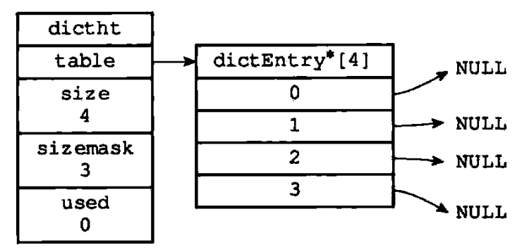
2.3.4.2.2 哈希表节点 #
-
哈希表节点使用
dictEntry结构表示，每个dictEntry结构都保存着一个键值对：typedef struct dictEntry { void *key; /*键*/ union { /*值*/ void *val; uint64_t u64; int64_t s64; double d; } v; struct dictEntry *next; /*指向下个哈希表节点，形成链表*/ } dictEntry;key：表示键值对中的键。v：表示键值对中的值，其中键值对的值可以是一个指针、uint64_t的整数、int64_t的整数、双精度类型的浮点数。next：表示指向下个哈希节点的指针，这个指针可以将多个哈希值相同的键值对连接在一起，以此来解决键冲突的问题：-
如下图所示就是将两个索引值相同的键
k1和k0连接在一起：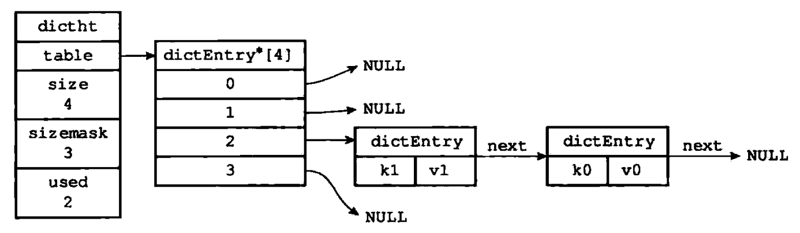
-
2.3.4.2.3 字典 #
-
Redis 中的字典由
src/dict.h/dict结构表示：typedef struct dict { dictType *type; /*类型特定函数*/ void *privdata; /*私有数据*/ dictht ht[2]; /*哈希表*/ long rehashidx; /* rehash 索引，当 rehash 不再进行时，值为 1 rehashing not in progress if rehashidx == -1 */ int iterators; /* 当前正在运行的迭代器数量 number of iterators currently running */ } dict;-
type：指向dictType结构的指针，每个dictType结构保存了一簇用于操作特定类型键值对的函数，Redis 会为用途不同的字典设置不同的类型特定函数。 -
privdata：保存了需要传给那些类型特定函数的可选参数：typedef struct dictType { unsigned int (*hashFunction)(const void *key); /*计算哈希值的函数*/ void *(*keyDup)(void *privdata, const void *key); /*复制键的函数*/ void *(*valDup)(void *privdata, const void *obj); /*复制值的函数*/ int (*keyCompare)(void *privdata, const void *key1, const void *key2); /*对比键的函数*/ void (*keyDestructor)(void *privdata, void *key); /*销毁键的函数*/ void (*valDestructor)(void *privdata, void *obj); /*销毁值的函数*/ } dictType;type属性和privdata属性是针对不同类型的键值对，为创建多态字典而设置的。 -
ht：是一个包含两个项的数组，数组中的每个项都是一个dictht哈希表，一般情况下，字典只使用ht[0]哈希表，ht[1]哈希表只会在对ht[0]进行rehash时使用。 -
rehashidx：记录了rehash目前的进度，如果目前没有在进行hash，那么他的值为-1。
-
-
下图展示了一个普通状态下（没有进行
rehash）的字典：
2.3.4.2.4 哈希算法 #
-
当要将一个新的键值对添加到字典里面时，程序需要先根据键值对的键值计算出哈希值和索引值，然后再根据索引值，将包含新键值对的哈希表节点放到哈希数组指定的索引上面。
-
哈希值和索引值的计算方法如下：
// 使用字典设置的哈希函数，计算键 key 的哈希值 hash = dict->type->hashFunction(key); // 使用哈希表的 sizemask 属性和哈希值，计算出索引值 // 根据情况不同，ht[x] 可以是 ht[0] 或是 ht[1] index = hash & dict->ht[x].sizemask; -
当字典被用作数据库的底层实现，或者哈希键的底层实现，Redis使用
MurmurHash2算法来计算键值的哈希值，该算法的优点是即使输入的键是有规律的，算法仍能给出一个很好的随机分布性，并且算法的计算速度也非常快。
2.3.4.2.5 解决键值冲突 #
-
Redis 的哈希表使用链地址法来解决键值冲突问题，每个哈希表节点都有一个
next指针，多个哈希表节点可以构成一个单向链表，被分配到同一个索引上的多个节点可以用这个单向链表连接起来，这就解决了键值冲突问题。 -
因为
dictEntry节点组成的链表没有指向链表表尾的指针，所以为了速度考虑，程序总是将新节点添加到链表的表头位置，排在其它已有节点的前面。常见的解决键值冲突的方法主要有以下几种：
- 开放定址法：
-
也叫再散列法，当关键字 $key$ 的哈希地址 $p = H(key)$ 出现冲突时，以 $p$ 为基础，产生另一个哈希地址 $p_1$，如果 $p_1$ 仍然冲突，再以 $p_1$ 为基础产生另一个哈希地址 $p_2$，…，直到找出一个不冲突的哈希地址 $p_i$，将相应程序存入其中。
-
通常都是用以下公式计算：
$$ H(i) = (H(key) + d_i) % m \space i = 1, 2,…, n $$
- 其中 $H(key)$ 为哈希函数，$m$ 为表长，$d_i$ 为增量序列，增量序列的取值方式不同，相应的再散列方式也不同，主要有三种：
- 线性探测再散列：冲突发生时，顺序查看表中下一单元，直到找出一个空单元或查遍全表。
- 二次探测再散列：冲突发生时，在表的右边进行跳跃式探测，直到找到空单元。
- 伪随机探测再散列。
- 其中 $H(key)$ 为哈希函数，$m$ 为表长，$d_i$ 为增量序列，增量序列的取值方式不同，相应的再散列方式也不同，主要有三种：
-
- 链地址法：
- 这种方法的基本思想是将所有哈希地址为 $i$ 的元素构成一个称为同义词链的单链表，并将单链表的头指针存在哈希表的第 $i$ 个单元中，因而查找、插入和删除主要在同义词链中进行。
- 链地址法适用于经常进行插入和删除的情况，例如
HashMap就是利用这种方法解决 Hash 冲突的。
- 再哈希法：
- 多写几个哈希函数，算出来一个
hashcode重复的就用另一个哈希函数算，直到算出来不一样。
- 多写几个哈希函数，算出来一个
- 建立一个公共溢出区域，就是把冲突的都放在另一个地方，不在表里面。
- 开放定址法：
2.3.4.2.6 rehash #
负载因子 = 哈希表已经保存节点数量 / 哈希表大小
-
随着操作的不断执行，哈希表保存的键值对会逐渐地增多或减少，为了让哈希表的负载因子维持在一个合理的范围之内，当哈希表保存的键值对数量太多或者太少时，程序需要对哈希表的大小进行相应的扩展或收缩。
-
扩展或收缩哈希表的工作可以通过
rehash（重新散列）操作来完成，具体步骤如下：- 为字典
ht[1]哈希表分配空间，这个哈希表空间的大小取决于要执行的操作，以及ht[0]当前包含的键值对的数量（也即是ht[0].used属性的值）：- 如果执行的是扩展操作，那么
ht[1]的大小为第一个大于等于ht[0].used * 2的 $ 2^n $。 - 如果执行的是收缩操作，那么
ht[1]的大小为第一个大于等于ht[0].used的 $ 2^n $。
- 如果执行的是扩展操作，那么
- 将保存在
ht[0]中的所有键值对rehash到ht[1]上面，rehash指的是重新计算键的哈希值和索引值，然后将键值对放置到ht[1]哈希表的指定位置上。 - 当
ht[0]包含的所有键值对迁移到ht[1]之后（ht[0]变为空表），释放ht[0]，将ht[1]设置为ht[0]，并在ht[1]新建一个空白哈希表，为下一次rehash做准备。
- 为字典
-
具体的
rehash例子如下：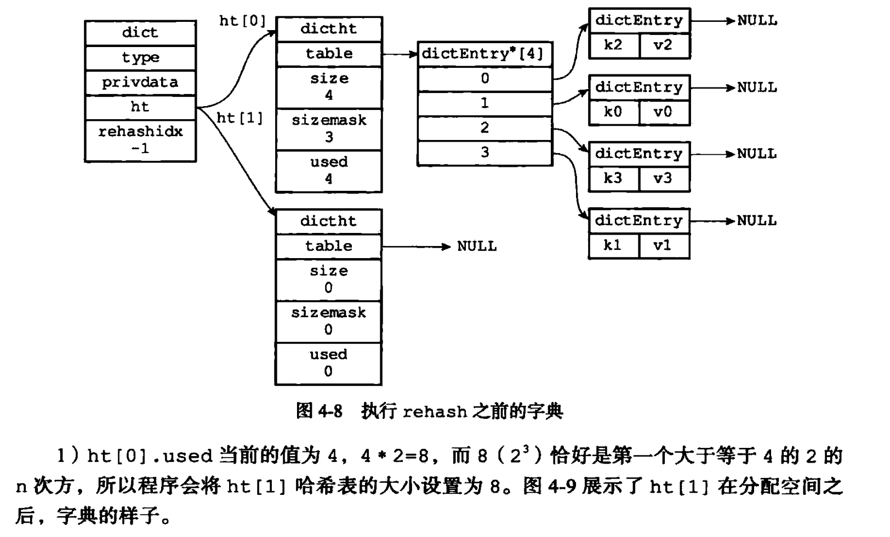


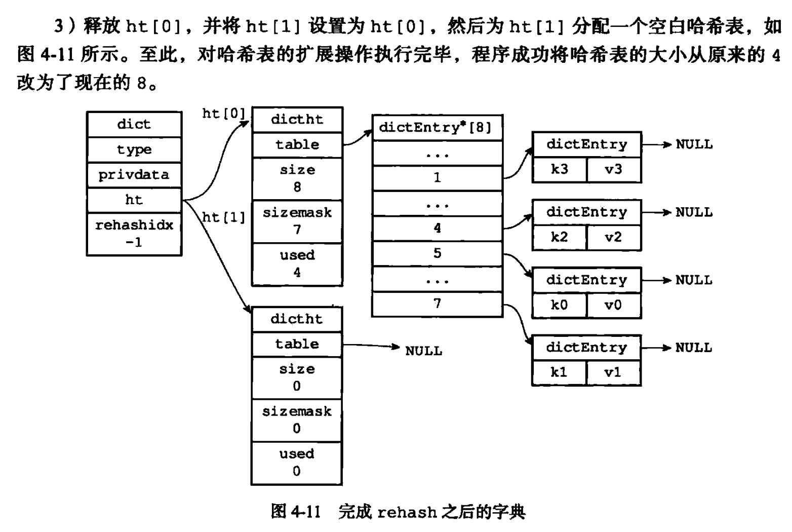
2.3.4.2.7 渐进式 rehash #
-
扩展和收缩哈希表需要将
ht[0]里面的所有键值对rehash到ht[1]里面，但是，这个rehash动作不是一次性、集中式地完成的，而是分多次、渐进式地完成的。 -
因为 Redis 是单进程的，如果哈希表中保存的键值对数量过多的话，当一次性将所有键值对全部
rehash到ht[1]的话，庞大的计算量可能会导致服务器在一段时间内停止服务。 -
哈希表渐进式
rehash的详细步骤如下：- 为
ht[1]分配空间，让字典同时持有ht[0]和ht[1]两个哈希表。 - 在字典中维持一个索引计数器变量，并将他的值设置为 0，表示
rehash工作正式开始。 - 在
rehash进行期间，每次对字典执行添加、删除、查找或者更新操作时，程序除了执行指定的操作外，还会顺带将ht[0]哈希表在rehashidx索引上的所有键值对rehash到ht[1]，当rehash工作完成之后，程序将rehashidx增 1。 - 随着字典操作的不断执行，最终在某个时间点上，
ht[0]的所有键值对都会被rehash至ht[1]，这时程序将rehashidx属性的值设为-1，表示rehash操作已完成。
- 为
-
渐进式
rehash的好处在于他采取分而治之的方式，将rehash键值对所需的计算工作均摊到对字典的每个添加、删除、查找和更新操作上，从而避免了集中式rehash而带来的庞大的计算量。 -
渐进式
rehash执行期间的哈希表操作：- 字典的添加、删除、查找或者更新操作会在两个哈希表上进行：
- 在字典里面查找一个键的话，程序会先在
ht[0]里面进行查找，如果没找到的话，就会继续到ht[1]里面进行查找。
- 在字典里面查找一个键的话，程序会先在
- 新添加到字典里面的键值对一律会被保存到
ht[1]里面，而ht[0]则不进行任何添加操作，这一措施保证了ht[0]包含的键值对数量会只减不增，并随着rehash操作的执行而最终变成空表。
- 字典的添加、删除、查找或者更新操作会在两个哈希表上进行：
-
具体的渐进式
rehash例子如下：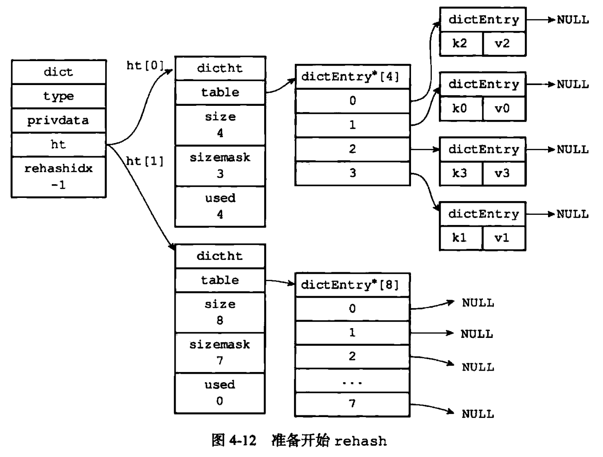
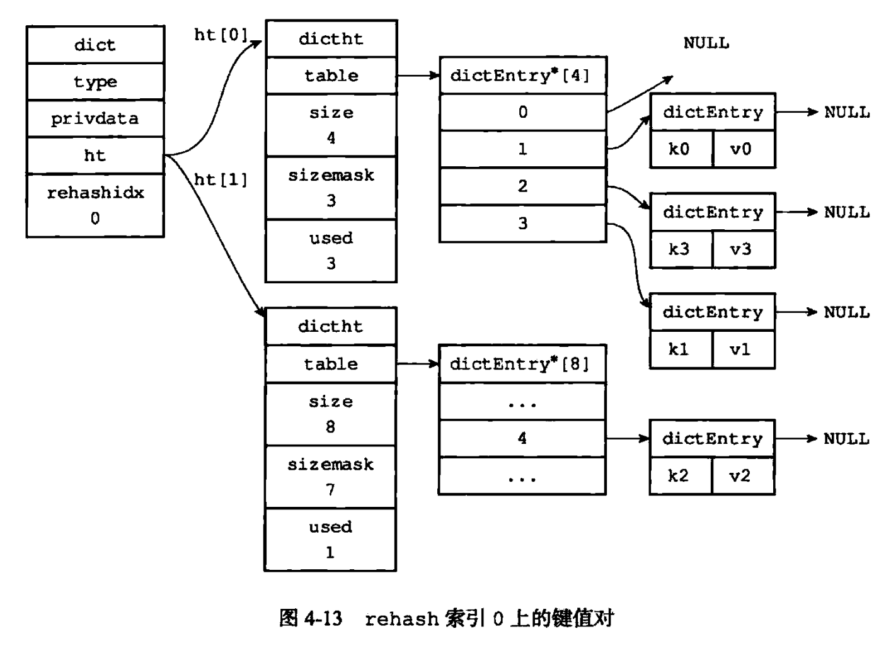

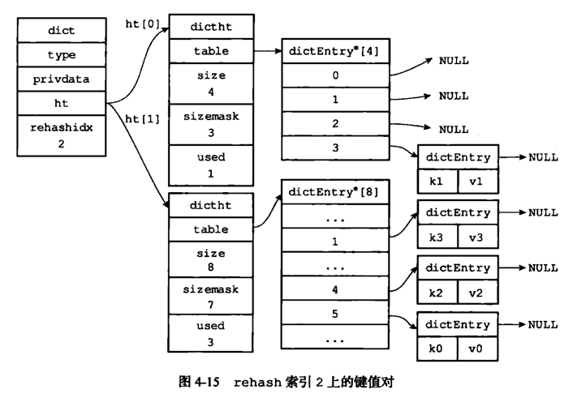
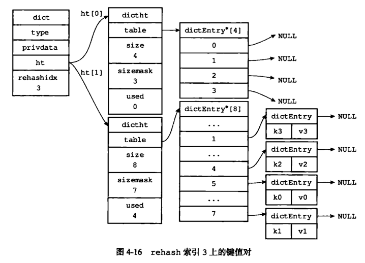

2.4 集合 #
2.4.1 存储数据 #
- 是一种无序的集合，集合中的元素没有先后顺序。
2.4.2 使用场景 #
- 某些需要去重的列表，并且
Set里面提供了判断某个成员是否在Set集合内的重要接口，这个也是List所不能提供的。 - 存储一些集合性的数据，比如在微博应用中，可以将一个用户所有的关注人存在一个集合中，将其所有粉丝存在另一个集合中，因为 Redis 为集合提供了求交集、并集、差集等操作，可以非常方便的实现共同关注、共同喜好、二度好友等功能。
2.4.3 数据结构 #
Set底层有两种实现，分别是整数集合和字典：- 当一个集合只包含整数值元素，并且这个集合的元素数量不多时，Redis 就会使用整数集合作为集合键的底层实现。
- 当一个集合不止包含整数值元素，还包含其它类型元素时，或者这个集合的元素数量很大时，Redis 就会使用字典作为集合键的底层实现。
- 字典的内容上面已经叙述过，具体可参考 2.3.4 字典。
2.5 有序集合 #
2.5.1 存储数据 #
- 元素放入集合时还要提供该元素的分数，可根据分数自动排序。
2.5.2 使用场景 #
- 存放一个有序且不重复的集合列表，比如
Twitter的public timeline可以以发表时间作为score来存储，这样获取时就是自动按时间排好序的。 - 可以做带权重的队列，比如普通消息的
score为 1，重要消息的score为 2，然后工作线程可以按score的倒序来获取工作任务，让重要的任务优先执行。 - 排行榜。
2.5.3 数据结构 #
ZSet底层有两种实现，分别是压缩列表和跳表：
- 当一个有序集合包含的元素数量不多，并且有序集合中元素的成员的长度不大时，Redis 就会使用压缩列表作为有序集合键的底层实现：
- 每个集合元素都使用两个紧挨在一起的压缩列表结点来保存，第一个节点保存元素的成员（
member），第二个元素保存元素的分值（score）。 - 压缩列表内的集合按分值从小到大进行排序，分值较小的元素被放置在靠近表头的方向，分值较大的元素放置在靠近表尾的方向。
- 例如：
-
执行以下命令：
redis> ZADD price 8.5 apple 5.0 banana 6.0 cherry -
元素在压缩列表中的保存方式如下图所示：

-
- 每个集合元素都使用两个紧挨在一起的压缩列表结点来保存，第一个节点保存元素的成员（
- 当一个有序集合中元素数量比较多，或者有序集合中元素的成员是比较长的字符串时，Redis 就会使用跳跃链表作为有序集合键的底层实现。
- 当一个有序集合包含的元素数量不多，并且有序集合中元素的成员的长度不大时，Redis 就会使用压缩列表作为有序集合键的底层实现：
- 压缩列表的内容上面已经叙述过，具体可参考 2.2.5 压缩列表，下面将主要叙述跳表相关的内容。
2.5.4 跳表 #
2.5.4.1 前言 #
- 跳表是一种有序数据结构，他通过在每个节点中维持多个指向其他节点的指针，从而达到快速访问节点的目的。
- 跳表支持平均 $O(logN)$、最坏 $O(N)$ 复杂度的节点查找，还可以通过顺序性操作来批处理节点。
- Redis使用跳表作为有序集合键的底层实现之一，如果一个有序集合包含的元素数量比较多，又或者有序集合中元素的成员是比较长的字符串时，Redis 就会使用跳表来作为有序集合键的底层实现。
2.5.4.2 实现 #
-
Redis 的跳表由
src/redis.h/zskiplistNode和src/redis.h/zskiplist两个结构定义，其中zskiplistNode结构用于表示跳表节点，而zskiplist结构则用于保存跳表节点的相关信息，比如节点的数量、指向表头结点和表尾节点的指针等。 -
跳表的结构如下图所示：
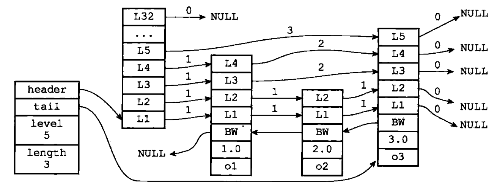
-
位于图片最左边的是
zskiplist结构，该结构包含以下属性：header：指向跳表的表头结点。tail：指向跳表的表尾节点。level：记录目前跳表内，层数最大的那个节点的层数（表头结点的层数不计算在内）。length：记录跳表的长度，也即是，跳表目前包含节点的数量（表头结点不计算在内）。
-
位于
zskiplist结构右方的是四个zskiplistNode结构，该结构包含以下属性：level：节点中用 $L1$、$L2$、$L3$等字样标记节点的各个层，$L1$代表第一层，$L2$代表第二层，以此类推，每个层都带有两个属性，分别是前进指针和跨度，前进指针用于访问位于表尾方向的其他节点，而跨度则记录了前进指针所指向节点和当前节点的距离，在上面的图片中，连线上带有数字的箭头就代表前进指针，而那个数字就是跨度，当程序从表头向表尾进行遍历时，访问会沿着层的前进指针进行。backward：节点中用BW字样标记节点的后退指针，他指向位于当前节点的前一个节点，后退指针在程序从表尾向表头遍历时使用。score：各个节点中的 1.0、2.0 和 3.0 是节点所保存的分值，在跳表中，节点按各自保存的分值从小到大排列。obj：各个节点中的 $o1$、$o2$、$o3$是节点所保存的成员对象。
需要注意的是表头结点和其他节点的构造是一样的，也有后退指针、分值和成员对象，不过表头结点的这些属性都不会被用到，所以图中省略了这些部分，只显示了表头结点的各个层。
-
2.5.4.2.1 跳表节点 #
-
跳表节点的实现由
src/redis.h/zskiplistNode结构定义：typedef struct zskiplistNode { robj *obj; /*成员对象*/ double score; /*分值*/ struct zskiplistNode *backward; /*后退指针*/ struct zskiplistLevel { /*层*/ struct zskiplistNode *forward; /*前进指针*/ unsigned int span; /*跨度*/ } level[]; } zskiplistNode; -
层：
-
跳表节点的
level数组可以包含多个元素，每一个元素都包含一个指向其他节点的指针，程序可以通过这些层来加快访问其他节点的速度，一般来说，层的数量越多，访问其他节点的速度就越快。 -
每次创建一个新跳表节点的时候，程序都根据幂次定律（越大的数出现的概率越小）随机生成一个介于 1 和 32 之间的值作为
level数组的大小，这个大小就是层的高度。 -
下图分别展示了三个高度为 1 层、3 层和 5 层的节点：

-
-
前进指针：
- 每个层都有一个指向表尾方向的前进指针，用于从表头向表尾方向访问节点，下图用虚线表示出了程序从表头向表尾方向，遍历跳表中所有节点的路径：

- 迭代程序首先访问跳表的第一个节点（表头），然后从第四层的前进指针移动到表中的第二个节点。
- 在第二个节点时，程序沿着第二层的前进指针移动到表中的第三个节点。
- 在第三个节点时，程序同样沿着第二层的前进指针移动到表中的第四个节点。
- 当程序再次沿着第四个节点的前进指针移动时，他碰到了一个
NULL，程序知道这时已经到达了跳表的表尾，于是结束了这次遍历。
- 每个层都有一个指向表尾方向的前进指针，用于从表头向表尾方向访问节点，下图用虚线表示出了程序从表头向表尾方向，遍历跳表中所有节点的路径：
-
跨度：
- 层的跨度用于记录两个节点之间的距离：
- 两个节点之间的跨度越大，他们相距得就越远。
- 指向
NULL的所有前进指针的跨度都为 0，因为他们没有连向任何节点。
- 跨度主要用来计算排位（Rank）的，在查找某个节点的过程中，将沿途访问过的所有层的跨度累计起来，得到的结果就是目标节点在跳跃表中的排位，例如：
-
下图用虚线标记了在跳跃表中查找分值为 3.0、成员对象为 $o3$ 的节点时沿途经历的层，并且层的跨度为 3，所以目标节点在跳跃表中的排位为 3。

-
下图用虚线标记了在跳跃表中查找分值为 2.0、成员对象为 $o2$ 的节点时沿途经历的层，在查找节点的过程中，程序经过了两个跨度为 1 的节点，因此可以计算出，目标节点在跳跃表中的排位为 2。
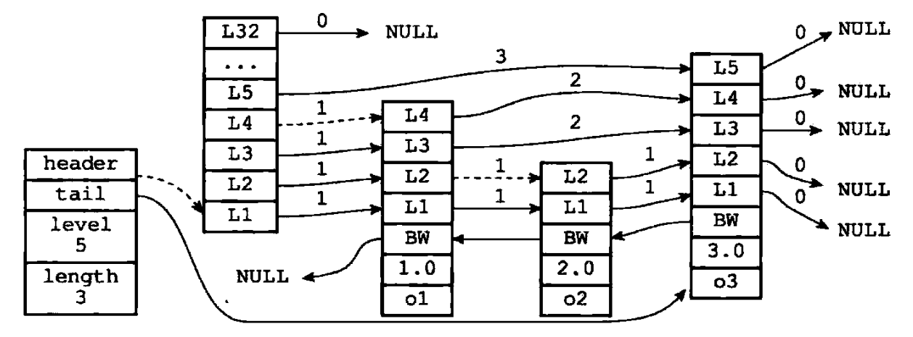
-
- 层的跨度用于记录两个节点之间的距离：
-
后退指针：
-
节点的后退指针用于从表尾向表头方向访问节点，与可以一次跳过多个节点的前进指针不同，因为每个节点只有一个后退指针，所以每次只能后退至前一个节点。
-
下图用虚线展示了如何从表尾向表头遍历跳表中的所有节点，程序首先通过跳表的
tail指针访问表尾节点，然后通过后退指针访问倒数第二个节点，之后再沿着后退指针访问倒数第三个节点，再之后遇到指向NULL的后退指针，于是访问结束。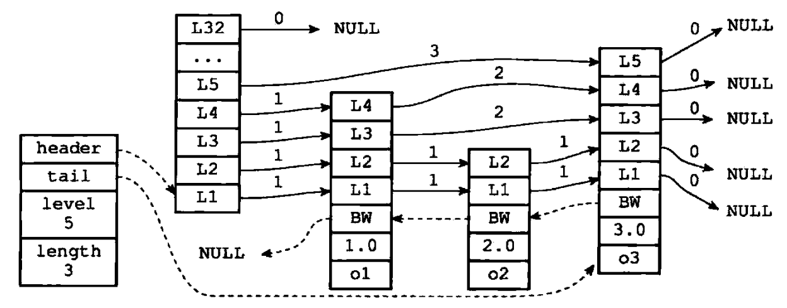
-
-
分值和成员：
-
节点的分值是一个
double类型的浮点数，跳表中的所有节点都按分值从小到大来排序。 -
节点的成员是一个指针，他指向一个字符串对象，而字符串对象则保存着一个 SDS 值。
-
在同一个跳表中，各个节点保存的成员对象必须是唯一的，但是多个节点保存的分值却是可以相同的，分值相同的节点将按照成员对象在字典中的大小来进行排序，成员对象较小的节点会排在前面（靠近表头的方向），而成员对象较大的节点则会排在后面（靠近表尾的方向）。
-
如下图所示，三个跳表节点都保存了相同的分值 10086.0，保存成员对象 $o1$ 的节点排在保存成员对象 $o2$ 和 $o3$ 节点之前，而保存成员对象 $o2$ 的节点又排在保存成员对象 $o3$ 的节点之前，由此可见，$o1$、$o2$、$o3$ 三个成员对象在字典中的排序为 $o1 \lt o2 \lt o3$。

-
2.5.4.2.2 跳表 #
-
仅靠多个跳表节点就可以组成一个跳表，如下图所示：
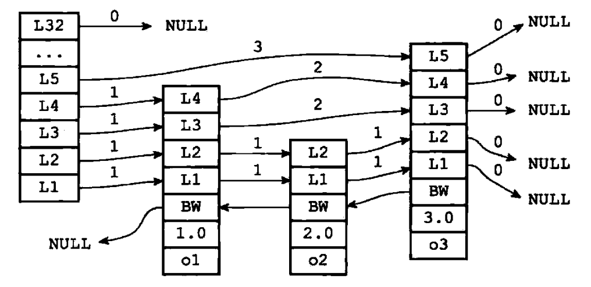
-
但通过使用一个
zskiplist结构来持有这些节点，程序可以更方便地对整个跳表进行处理，比如快速访问跳表的表头结点和表尾节点，或者快速地获取跳表节点的数量（即跳表的长度）等信息，如下图所示：
-
zskiplist的结构定义如下：typedef struct zskiplist { struct zskiplistNode *header, *tail; /*表头结点和表尾节点*/ unsigned long length; /*表中节点的数量*/ int level; /*表中层数最大的节点的层数*/ } zskiplist;
2.5.4.3 跳表与平衡树、哈希表的比较 #
- 跳表和各种平衡树（如 AVL、红黑树）的元素是有序排列的，而哈希表不是有序的，因此，在哈希表上只能做单个
key的查找，不适宜做范围查找，所谓范围查找，指的是查找那些大小在指定的两个值之间的所有节点。 - 在做范围查找的时候，平衡树比跳表操作要复杂，在平衡树上，我们找到指定范围的小值之后，还需要以中序遍历的顺序继续寻找其他不超过大值的节点，如果不对平衡树进行一定的改造，这里的中序遍历并不容易实现，而在跳表上进行范围查找就非常简单，只需要在找到小值之后，对第一层链表进行若干步的遍历就可以实现。
- 平衡树的插入和删除操作可能引发子树的调整，逻辑复杂，而跳表的插入和删除只需要修改相邻接点的指针，操作简单又快速。
- 从内存占用上来说，跳表比平衡树更灵活一些，一般来说，平衡树每个节点包含 2 个指针（分别指向左右子树），而跳表每个节点包含的指针数目平均为 $\frac{1}{1-p}$，具体取决于参数 $p$，如果向 Redis 里的实现一样，取 $p = \frac{1}{4}$，那么平均每个节点包含 1.33 个指针，比平衡树更有优势。
- 查找单个
key，跳表和平衡树的时间复杂度都为 $O(logn)$，大体相当，而哈希表在保持较低的哈希值冲突概率的前提下，查找时间复杂度接近 $O(1)$，性能更高一些，所以我们平常使用的各种Map或dictionary结构，大都是基于哈希表实现的。 - 从算法实现难度上来比较，跳表比平衡树要简单的多。
2.5.4.4 Redis 为什么使用跳表而不用平衡树作为集合的实现 #
可以参考 2.5.4.3 跳表与平衡树、哈希表的比较，然后从内存占用和算法复杂度两个角度来分析。
参考文献 #
- 几率大的 Redis 面试题（含答案）。
- Redis 面试题（总结最全面的面试题）。
- Redis 基本类型及其数据结构。
- Redis 数据类型及使用场景。
- redis 设计与实现（第二版）。
- Redis 为什么用跳表而不用平衡树？
- Hash 冲突的几种解决方法。